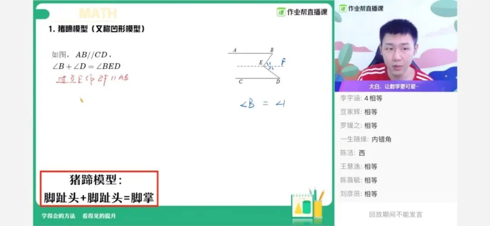
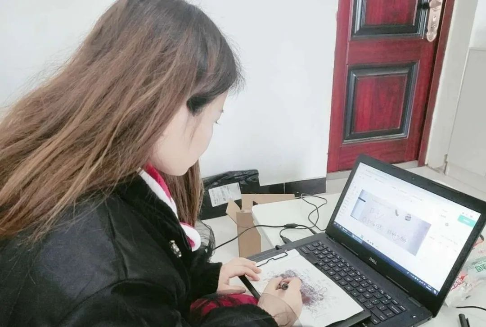
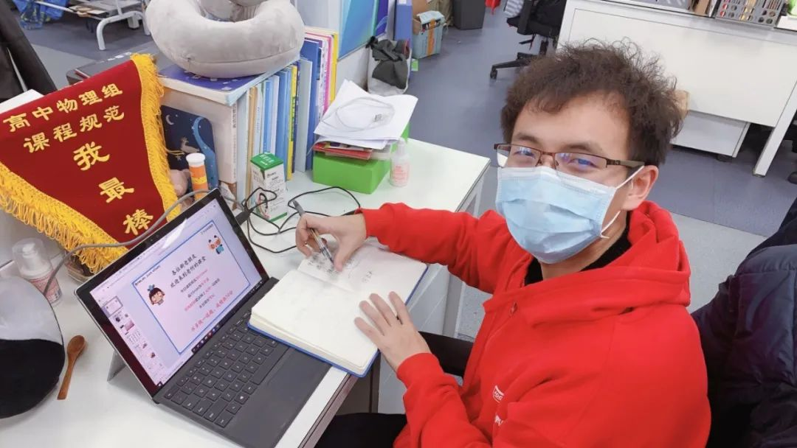

“停课不停学”第一周，老师战网络，家长做噩梦
原文链接 备份链接 “有一次我突击去检查孩子的网课情况，发现她网课是在播放，但是电脑桌面当前窗口显示的却是她的QQ群，原来一群同学正聊得欢。” 记者|王晓珊 编辑| 盛倩玉 小豆 实习生| 甘笠男 刘苗苗 龚纾绮 “咋出来的不是云课堂？难 …

2020年春天，一场突如其来蔓延全国的新冠肺炎疫情，让这个时期变得特殊，在家学习成为主流的方式。老师纷纷变成主播，家长不得不成为督学。
然而，在线直播课究竟该如何上？很多人还是懵的。老师花式「翻车」、学生强撑精神的背后，人们正在重新发现在线直播课。
文｜易方兴
编辑｜楚明
直播课开始了。周琴知道，接下来儿子上在线直播课的这一整天，她都无法轻松了。
周琴是武汉人，一家人正处在中国最核心的疫区。随着全国各地纷纷宣布延迟开学，别的问题都好解决，唯独孩子的上课问题让她犯了难。
周一到周五是最煎熬的时候，每天上午要听全省统一的直播课，儿子的注意力经常分散，有时趁周琴不注意，就关了窗口看别的去了。
到了下午，则是他们初中学校自己临时开的在线直播课。上课在qq群里进行，依靠语音来上课。看不到画面，注意力难免打折扣。周琴不得不像一颗钉子那样钉在儿子身边，逼着他听课。
2020年春天，一场突如其来蔓延全国的新冠肺炎疫情，让这个时期变得特殊，在家学习成为主流的方式。老师纷纷变成主播，家长不得不成为督学。
然而，在线直播课究竟该如何上？很多人还是懵的。老师花式「翻车」、学生强撑精神的背后，人们正在重新发现在线直播课。
与游戏PK的在线直播课
从不放心到放心的过程中，充满了斗争。周琴要时刻注意儿子动向。
儿子孙亮亮今年初一，刚升入武汉一所重点寄宿制学校，聪明、智商高，但容易粗心、自主性不强。初中环境变化，孩子要从儿童变成少年，正处于家长无比焦虑的时期。
在周琴家里，一开始，Ipad这样的设备都是严禁触碰的。学校的在线直播课开始了，她依旧得在旁边盯着，不然还是会偷偷切出去玩；上课的姿势也要不断提醒，一旦发现要躺着听课的苗头，就要敦促打起精神来。
学习成绩会不会落下，是所有家长都要面临的问题。儿子的线下补习班也停滞了。她只好采取新办法，报网课。
周琴曾在教育系统工作，知道被动逼迫孩子学习，起不到太好的效果。大年初一，她看到有人在朋友圈发作业帮直播课的免费课，连哄带骗地让儿子听了一两节，没想到入了迷。
免费课后，她果断报了新学期付费课。「考虑到武汉疫情的程度，我们心里已经做好了这个学期都只能在家学习的打算。」儿子坐不住，她必须要选择一种孩子喜欢的，能够主动学习的课程。
跟儿子一起听了在线直播课，周琴才知道现在的在线教育，已经远远不只是一块屏幕那么简单了，已经成为一个专业性很强的体系。
一个学生来到线上课，首先要自主选择班级。孙亮亮的数学老师白浩天同时带4个班，其中1个提升班，3个尖端班。提升班的教学内容与教材同步，适合基础弱，上课吃力的学生，尖端班则是针对课堂内容已经熟练，需要进一步拓展的学生。每个班型都会针对性地备课，每次课备课时间都在10小时以上。
老师们备课时所用的讲义，难度不在知识点的罗列，而是怎么生动有趣、抓住学生。线上课和线下补习班不同，几千个学生在屏幕后面，一旦觉得内容枯燥，很难有学生不去打游戏看视频。本质上，这是直播课堂与网络游戏的PK。
一份讲义的出台要长达4个月，反复迭代，集合多位老师的心血。能否把学生吸在屏幕前，能否让最多学生听懂，是两个必须要达到的标准。每一课时，都要经历整个教学组的集体磨合。一旦一个老师觉得学生有可能听不懂，哪怕第二天就要上课，老师们都会把教学设计推翻，一直讨论到深夜，直到得出一个大家都比较满意的讲法。
如何抓住孩子的注意力，还要考验老师的个人魅力。在网上，老师们根据性格特点形成自己的风格，段子手型、权威型、细致耐心型等不一而足。一般而言，幽默有趣的老师最受欢迎，一些学生选择老师还有另一个参考因素，「长得好看」。
气氛是轻松的，老师们花样百出地吸引学生的注意力。白浩天讲课风格非常幽默，不时还会自黑。他的同事、同为初中数学老师的张明哲有时会在课间休息时举办「K歌大赛」，吸引更多学生互动。
好几次，中午吃饭的时候，周琴发现儿子都在跟她说老师今天课上讲的多么幽默。孙亮亮特别喜欢「大白老师」白浩天，母子俩都觉得他讲话很像《奇葩说》的辩手小黑。「大白老师讲平行线，讲到内错角相等的性质时，把一类图形总结成『猪蹄模型』，我笑了半天。」孙亮亮说。

白浩天老师正在讲解「猪蹄模型」
在线直播课甚至比线下班让孩子们产生了更强的黏性。张明哲有时上完课，会在摄像头面前再多待十五分钟讲些延伸内容。大部分孩子愿意留下继续听完。「一般1200人的课，上完课之后，还选择继续留下来的有900多人。」
辅导作业是为人父母需要翻越的另一座大山。为了跟线下班抢生源，也为了解决家长的切肤之痛，在线直播课发展出了主讲老师和辅导老师相结合的双师体系。
辅导老师，是在主讲老师之外进行一对一答疑的「班主任」们，这是在线教育创造出来的新群体，直接决定一个孩子课后享受到的教育质量。
辅导老师乐君大年初一还在工作。她每天早上起床就开始改作业，300个学生的作业改到晚上10点，中途还要跟家长打电话。有的家长忙、不配合，觉得「孩子做不做作业也无所谓」。她连着打了3次，最后连最顽固的家长都被打动。
在作业帮直播课，像乐君这样的专职辅导老师有超过5000名。每人对接两三百名学生，每天为学生改作业、答疑、督促学习。一个学生上课时切出画面，也就是「开小差」或者「逃课」，系统后台都有显示，辅导老师会酌情家访，或是打电话催促。学生在线学习、做题，大数据出具个人学习报告，也要帮家长进行解读。
周琴说，「我没想到的是，即便是下课后，也有专门的辅导老师每天联系我。」
她不知道，为了让这样的课堂出现在更多孩子的屏幕上，有不计其数的老师在全国各地调研、奔波。
跨过高山
2019年8月，初中数学老师张明哲利用暑期唯一的一周休假，进行了一场5天5城的家访。他到达湖北黄冈市浠水县袁垅村，那里有个学生在等着他。
张明哲在作业帮直播课主讲了一年多，对他来说，很多时候，学生体现为直播软件上的用户名和数字。一个班的人数通常是上千人，讲课时，多一个人少一个人也没太大差别。然而，「我还是想亲眼看看我的学生。」
学生叫周甜，刚参加完50元暑期优惠课。周甜是个提问专业户，下课时，逮着张明哲就问问题。这让他好奇，这是个怎样的小姑娘。
中午太阳正烈，在全村最低矮破败的一个砖瓦房前，周甜一家人热情地迎接张明哲。周甜身高1米6，极瘦，也很腼腆。见到了「大城市里来的老师」，周甜妈妈很开心。家里穷，女孩只能报市面上所有在线教育机构的特价课，张明哲是唯一一个来看望她们的老师。
周甜父亲生病在家，家里三个孩子全指望一口鱼塘，但最近养的鱼被邻居的鸡粪毒死了。经济贫穷成为不可承受之重。作业帮长期班课收费已经是行业里较低水平，周甜依然负担不起。临走时，张明哲在给周甜的礼物里悄悄塞了1000块钱，「这钱，她拿来报课可以，拿来改善生活也可以。」但他们依然拒绝了。
这是中国教育现实的另一个侧面。中国有1.8亿的中小学生，其中73%的孩子分布在三线到六线的地区，与作业帮直播课的用户构成比例高度重合。在线直播课既然辐射全国，能否做到既为一二线城市的孩子提供课程，也不让三到六线城乡的孩子们掉队？

周甜家门前
回到北京之后张明哲有了动力。那个瘦削身影常常出现在他的脑海里。他希望为更多欠发达地区的孩子传递好的教育。
张明哲把普惠教育形容为一座高山。2018年之前，他用的都是全国教育最先进的地方产出的教材，北京海淀区。但一线城市孩子们听起来轻松的题，低线城市许多孩子根本听不懂。那段时间，他总是接到充满挫败感的反馈，「老师，你讲的课太难了」；「张老师你讲得确实不错，就是我孩子跟不上……」
以初中几何为例，海淀区的试题里，题目是一个10条直线两两相交的几何图，希望学生求出对顶角和邻补角的个数。教材上只写了概念，没有提到相关公式和解法。这道题如果没有基础，学生们很难搞明白。
主要的困难是，各地的学生水平基础不均。这背后，是教育资源分布不均。
不单张明哲，作业帮各个学科的老师都意识到了相似的问题。小学语文负责人孙颖经历过5年教育创业，跑遍了半个中国的教育机构和学校。
2017年全国开始推广教育部编写的语文教材，对读和写提出了更高要求。然而，孙颖发现，许多地级市的老师依然按照过去的模式在教学生，「我跟这些老师聊，他们只知道换教材了，但换了教材意味着什么，教学又要有什么改变，了解却很少。」
一次，她在一个城市开讲座，问台下几百个学生，有没有读过曹文轩的小说《草房子》？结果只有一个学生举手。「这部小说是部编版的推荐阅读书目，一线城市里，大部分小学生们都读过了。」这让孙颖感到，形势已经相当紧迫了。
要把教育资源推向全国，就要打造适合全国学生的在线直播课。作业帮直播课的探索是从小学数学开始的。
小学数学老师董伟已有十年教龄，加入作业帮直播课的第一件事，就是和团队打造一款面向各地的数学同步课。此前，主要教育机构都面向一二线城市，重点满足这些地区孩子的思维特训需求，全国三到六线城市的孩子竟被意外地忽视了。作业帮打算补上这个空白，董伟感到很兴奋，但没想到经历了一波三折。
刚开始想的比较简单，把课程降低一些难度，结果发现学生还是听不懂，就一直调，半年后还是觉得难，这才决定把课程体系变成同步培优，然后发现方向选对了。
新的数学同步培优课，依据人教版、北师版、苏教版大纲，完全按照学校的节奏走，帮助学生打牢基础、拓展提升，同时增加课程的趣味性。没想到推出后成了爆款，每学期有几十万学生。
现在，小学数学同步培优课已经拥有成熟的课程体系，从教研到技术有一个完整的链条。
小学数学的突破，为包括张明哲在内的各学科老师带来启发：在中国，现阶段最需要满足的依然是最基本的需求。
老师们以此为支点，以同步课为主打、培优课为延伸，找到了把好课程推向全国的新定位，形成了各学科课程体系，如高中「快数学」体系、初中语文「全能卓越」体系、小学英语Super E课程体系。
教育资源的渗透，不光是给学生，还要给家长。辅导老师乐君常常要给家长普及正确的教育理念，她接触的很多家长都以为，教育就是扔给学校的事儿。
一些家长的教育方式也要重塑。有一次，一位辅导老师提醒家长，学生没有来上课。一小时后，家长把孩子暴揍一顿，并发来了打孩子的照片。辅导老师哭笑不得，赶紧进行劝导。
在线教育蓬勃发展的这几年，作业帮最先触达了全国更多学生，已经拥有累计8亿用户，旗下app月活跃用户1.7亿。今年春节，面向全国中小学生推出的免费直播课，服务了超过3000万学生。
能教到全国各地，尤其是偏远乡镇的孩子们，让张明哲感觉身上的责任更重了。「在普通人无法想象的困难环境里，需要更适合的在线直播课。」

辅导老师乐君
出个大招
一定要想出办法。
何连伟已经当了八年老师。之前他一度觉得到了职业瓶颈，尽管喜欢这份职业，但许多问题作为老师也没法解决。进入作业帮后，他开始接手物理教研项目，突然发现自己在做一件沙漠中开江河的新事。「既然针对全国的物理在线教育是一片空白，为啥我们不能打造自己的体系？」
2018年起，作业帮各学科老师开始摸索全国学生都能听懂的在线直播课，高中「易物理」课程体系就此产生，其中一个核心是「大招体系」。教研组招来一批优质教师，专门研发高中物理的解题「大招」。其中有个老师是何连伟过去的同事，「他讲课比较严肃，不适合在线上讲课，但是搞教研是一把好手，一个人就想出了60%的大招。」
大招是个好东西。无论是一线城市，还是五线城市的学生，只要学到了招式，遇到题目都可以快速分解。何连伟的目标是，总结一套覆盖高中物理所有题型的大招体系。任务量下发到每个老师头上，每人每周都要有产出。有段时间，物理组的老师们走在路上都在琢磨。
历时一年半，高中物理大招体系终于搭建完成，一共112个，都是从最基础的原理演化而来，是拈花飞叶的「武林秘籍」。无论基础好还是基础差的学生都能搞懂。
学生解题效率有了质变，就像是打游戏「开了挂」。一些学生对大招产生了饥渴。「我一上课，他们就眼巴巴地专门等着我讲大招。」这种时候，何连伟也得收着点儿，「我会告诉他们，灵活使用大招的前提，是要搞明白基础知识。」
大招体系不仅让更多人听得明白，还在突破在线直播课的天花板。何连伟发起了一个「百人满分计划」，希望带领100个学生高中物理考出满分。
这个计划听起来很疯狂。高中物理的难度众所周知，尤其是电磁部分，很多学生考试时都会弃题。但他解释说，「满分听起来很狂妄，但在『易物理』体系下并非天方夜谭。」
何连伟做了大量细碎工作，备课时每一道题、每一个选项都会斟酌，学生可能在什么地方遇到思维障碍，要怎么样去诠释。「我会给有能力的学生预留一些进阶题目，让学生们找到更合适的解题方法。」
如今，满分计划已经初见成效，已经有6名同学突破了「不可能」。第一个考满分的是一名女生，她难以置信地发来微信：「老师，我竟然物理真的考了一百分！」

高中物理老师何连伟
其他学科也在课程体系下打造出了大招，光初中数学就有196个。「如果你把这196个大招都搞明白了，150分的卷子，得个145分没什么问题。」
在初中数学老师张明哲的课堂上，学生可以靠大招体系理解听不懂的地方。拿「10条直线两两相交问题」来说，老师们为学生总结出「相交大招」，从两条线的相交开始讲起，最后总结出规律：n条线两两相交，会有n（n-1）个对顶角。
高中语文负责人杨勇在教育领域摸索了十几年，一手打造了作业帮的「纵横语文」体系。
一个文言文知识点，如果照搬课本来讲，学生会觉得没意思，老师们就去史书里找故事性强、生动有趣的例子，增加课堂的趣味性；同时，外国优秀作品的鉴赏也是阅读训练的内容。语文团队还出了一套12本「最美的文字」，用来拓展学生的知识面，增加阅读量。语文需要积累，但这些「以学生为本」的讲法也是「大招」。
语文组还在办公室安了书架，把能买到的各类书籍都摆在上面，随时查阅。别的团队团建是去聚餐，语文组的团建是比哪一位老师会买书。
教育永远在路上
现在，即便自己不在旁边，儿子也能专心听课，周琴可以轻松了。
小学语文老师孙颖跑遍中国的那几年，一直在对各地语文老师进行培训。有的培训机构为了赚钱，希望孙颖两天之内把公司财务培养成语文老师。这些见闻，让她感到在线直播课走向全国的迫切。
辅导老师乐君从来没有赶上过最后一班地铁。她每天盯着学生，水都顾不上喝，家长们都很信任她。
乐君出生于河南驻马店一个小县城，一直是县城中学里最优秀的学生，却受限于不可逾越的天花板。
高考那年，她考了全级第二，分数却只够一所二本院校。这种遗憾，是她督促学生的原点。
乐君记挂着浙江山区里的学生刘苗苗。她喜欢直播课，屋里没信号，在户外下着雨让妈妈打着伞也要听。山里信号差，母女两人去山顶，坐着看老师直播。
山上很冷，又逢冬季，母女俩冻得不轻。她们哈着气，盯着屏幕，就像在看一束光。
没看够？
长按二维码关注《人物》微信公号
更多精彩的故事在等着你

原文链接 备份链接 “有一次我突击去检查孩子的网课情况，发现她网课是在播放，但是电脑桌面当前窗口显示的却是她的QQ群，原来一群同学正聊得欢。” 记者|王晓珊 编辑| 盛倩玉 小豆 实习生| 甘笠男 刘苗苗 龚纾绮 “咋出来的不是云课堂？难 …
原文链接 备份链接 为什么这次在线教育又火了？ “到了2020年，老师和学生都不用去学校了，在家里就能上课”。这是2000年梦想杯作文大赛特等奖节选中的一句话，没想到在二十年后的今天却由于新冠肺炎疫情影响而变成了现实。 近年来在线教育被社 …
原文链接 备份链接 万人空巷，形容的是成千上万的人涌向某处，使得巷子里空阔冷落的情景。「全国各个省份的学生都凑在一起上直播课，大城市的有，下面县里村里的学生也有，街道上却空无一人。你想想，这是个什么场景。」 文 | 易方兴 编辑 | …
原文链接 备份链接 澎湃新闻记者 张轶君 蔡琳 从年前到年后，阿里旗下办公软件“钉钉”的下载量经历了过山车一般起伏。 作为一款企业移动办公应用，钉钉年前平日下载量滑动在苹果App Store总榜五十名到二十名之间。然而让人意想不到的是，节 …
原文链接 备份链接 如何在老师与学生之间、学生之间相互不见面的情况下， “保证在线学习与线下课堂教学质量实质等效”？首先需要申明：我说这是个好问题，不是说我对于这个问题有个有把握的、确定准确的答案，而是说这个问题能够引发一系列关于高等教育 …